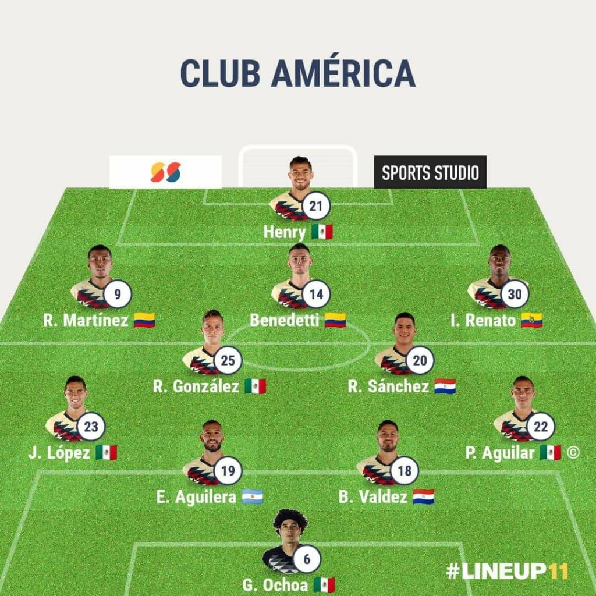

<!--
  Generated template for the AlineacionPage page.

  See http://ionicframework.com/docs/components/#navigation for more info on
  Ionic pages and navigation.
-->
<ion-header>
  <ion-navbar>
      <button ion-button menuToggle>
          <ion-icon class="icon" name="menu"></ion-icon>
        </button>
    <ion-title>Alineacion Siguiente Partido</ion-title>
  </ion-navbar>
</ion-header>

<ion-content padding class="fondo">
  
  
    
<div class="div-alineacion">
  <h2>America enfrenta a Puebla en un complicado duelo que de perder estaria complicando su clasificacion, los dirgidos por Miguel Herrera saltarian al campo con:</h2>
  <ion-list>
        <ion-label>Guillermo Ochoa</ion-label>
        <ion-label>Paul Aguilar</ion-label>
        <ion-label>Bruno Valdez</ion-label>
        <ion-label>Emanuel Aguilera</ion-label>
        <ion-label>Jose Lopez</ion-label>
        <ion-label>Renato Ibarra</ion-label>
        <ion-label>Ruben Gonzalez</ion-label>
        <ion-label>Richard Sanchez</ion-label>
        <ion-label>Roger Martinez</ion-label>
        <ion-label>Nicolas Benedetti</ion-label>
        <ion-label>Henry Martin</ion-label>
    </ion-list>
</div>
  
</ion-content>
